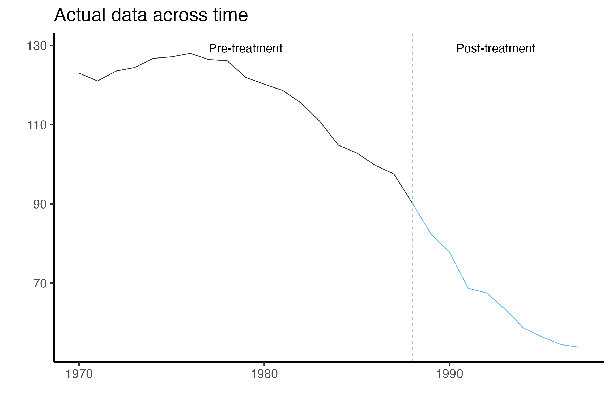
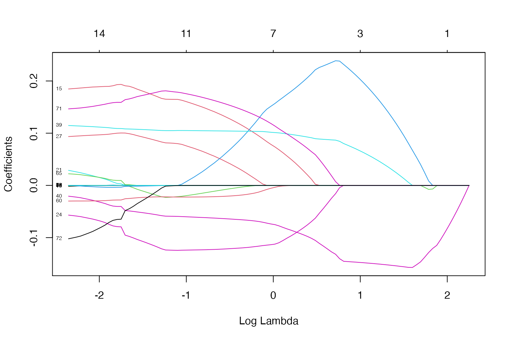
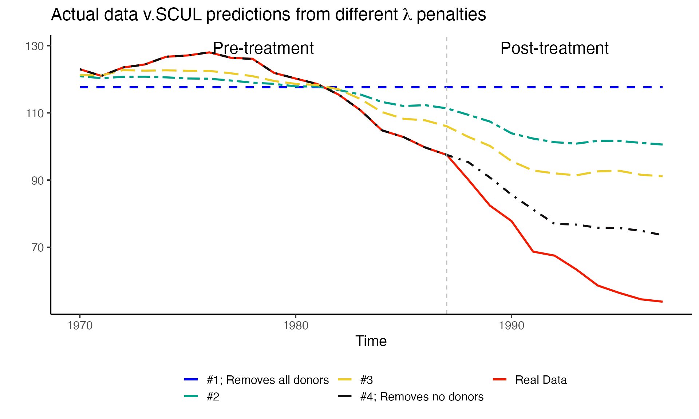
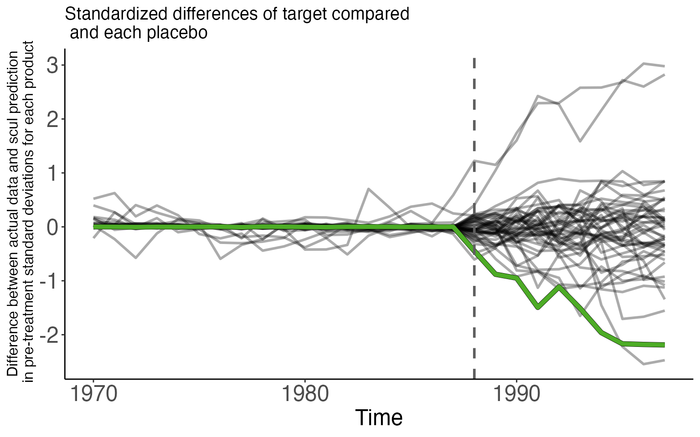
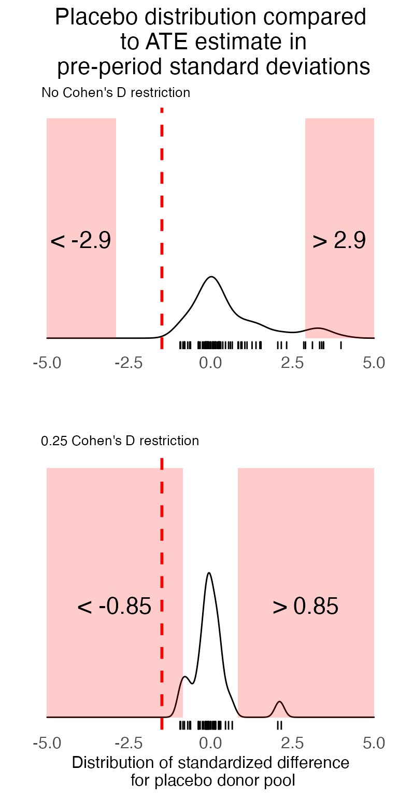
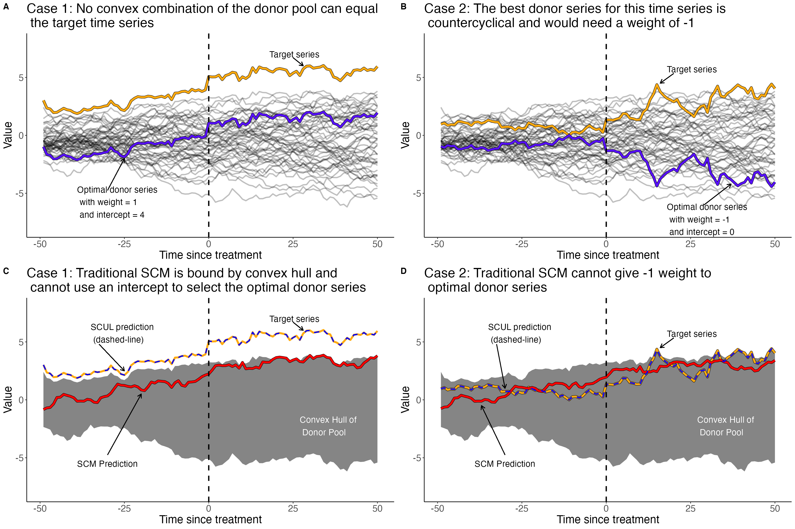

SCUL Tutorial
Overview of R package, extended example using publicly available data, and brief comparison to traditional method
Alex Hollingsworth
2021-05-18
Source:vignettes/scul-tutorial.Rmd
scul-tutorial.RmdExample data
This tutorial uses publicly available data that is similar to the data used in Abadie, Diamond, and Hainmueller (2010). The empirical goal of Abadie, Diamond, and Hainmueller (2010) was to estimate the effects of a California tobacco control policy implemented in 1988.
When in long form, the data are at the state-year level and range from 1970 to 1997 (28 years). For each state and year there are data on cigarette sales per capita (cigsale) and the retail price of cigarettes (retprice). To be used in the SCUL procedure, the data must be in wide format, where each row is a time-period (e.g., year) and each column is a unit-specific variable. In our data, for each variable the unit is identified by the end of each column name (e.g., variables from the state of California are indicated by _6, which is the FIPS code for California.)
The dataset should be sorted by whatever variable you use to index time with the earliest date being first and the most recent date being last.
The cigarette_sales dataset is stored in the data subdirectory of this package. It should be automatically loaded when the scul package is loaded.
dim(cigarette_sales)
#> [1] 28 79
head(cigarette_sales[,1:6])
#> year cigsale_6 cigsale_1 retprice_1 cigsale_5 retprice_5
#> 1 1970 123.0 89.8 39.6 100.3 36.7
#> 2 1971 121.0 95.4 42.7 104.1 38.8
#> 3 1972 123.5 101.1 42.3 103.9 44.1
#> 4 1973 124.4 102.9 42.1 108.0 45.1
#> 5 1974 126.7 108.2 43.1 109.7 45.5
#> 6 1975 127.1 111.7 46.6 114.8 48.6We will break this dataset into two: one containing data on the target product and another containing all other data that will be used to as the donor pool for our synthetic counterfactual. In each dataset we will leave the first column, which indexes time. We will not include the retail price in California as a potential donor variable as this is endogenous.
AllYData <- cigarette_sales %>%
select(c("year", "cigsale_6"))
AllXData <- cigarette_sales %>%
select(-c("year", "cigsale_6", "retprice_6"))Pre-processing/cleaning data
Before we begin our analysis, let’s make sure the data are in the right format and trim any problematic variables.
Clean data with Preprocess()
The Preprocess() function takes a matrix or a data-frame and ensures that each column
- is numeric
- has all non-missing values
- and is not constant
It drops any column that violate these conditions.
processed.AllYData <- Preprocess(AllYData)
Use PreprocessSubset() to ensure that all subsets have variation
To avoid over-fitting, we will use a cross-validation approach that evaluate models on many subsets of the data. As such we need to ensure that the subsets of the variables used in the analysis have variation. The PreprocessSubset() is the same as the Preprocess() function, except that it iteratively performs the same procedure on every subset that is used in the cross-validation.
To determine subsets used in the cross-validation process, it is necessary to input:
First row for the first date of treatment
TreatmentBeginsAt(we do this as row number to allow time to be input in a flexible manner)-
NumberInitialTimePeriods: The number of initial time periods wanted in the training data for the first cross-validation run.- Ideally this number would be the same as the post-treatment length, but may need to be shorter if there are not enough pre-treatment time periods. For the example in our working paper, we use a very long pre-period. However the example in this vignette using a “short” dataset, so we use a smaller number here.
Assuming that treatment occurs at a discrete time and does not “turn-off,” both the pre-treatment length and post-treatment length are automatically calculated - The length of the post-treat
TreatmentBeginsAt <- 19 # Here the 18th row is 1988
PostPeriodLength <- nrow(processed.AllYData) - TreatmentBeginsAt + 1
PrePeriodLength <- TreatmentBeginsAt-1
NumberInitialTimePeriods <- 5
processed.AllYData <- PreprocessSubset(processed.AllYData,
TreatmentBeginsAt ,
NumberInitialTimePeriods,
PostPeriodLength,
PrePeriodLength)
Use OrganizeDataAndSetup() to clean donor and placebo pool data
OrganizeDataAndSetup() creates a list of items called that is called by the later SCUL procedures. We call this list SCUL.input. This function also cleans the donor and placebo pools in using the functions outlined above PreprocessSubset() and Preprocess().
In this function you need to specify:
-
time: a column vector for time -
y: a column vector for the target variable of interest -
x.DonorPool: the variables that will be used to construct your synthetic control group -
CohensDThreshold: a unit-free threshold for what is considered a satisfactory model fit (outlined in more detail below and in our paper) -
x.PlaceboPool: the variables that will be used to conduct statistical inference. Need not be the same as the donor pool. See below more details on the process used for statistical inference. -
OutputFilePath: a directory where output will be saved -
NumberInitialTimePeriods: The number of initial time periods wanted in the training data for the first cross-validation run. -
TrainingPostPeriodLength: The number of time periods wanted in the test data for all cross-validation runs. Ideally this would be the same as the post-treatment length since this is the length of time you are asking your prediction to preform an an out-of-sample prediction over. However for shorter panels this may not be feasible.
SCUL.input <- OrganizeDataAndSetup (
time = AllYData %>% select(year),
y = AllYData %>% select(cigsale_6),
TreatmentBeginsAt = TreatmentBeginsAt,
x.DonorPool = AllXData,
CohensDThreshold = 0.25,
NumberInitialTimePeriods = NumberInitialTimePeriods,
TrainingPostPeriodLength = 7,
x.PlaceboPool = AllXData,
OutputFilePath="vignette_output/"
)Note: Using AllYData %>% select(year) keeps the result as a data.frame (typeof(AllYData %>% select(year)) returns list), while using AllYData[ ,1] returns a reduced dimension item (typeof(AllYData[ ,1]) returns integer). Having integer can mess with the internal functions being used in Preprocess() that check for missing values. It is on my to do list to fix these functions to be more flexible. But for now best to ensure that the objects entering SCUL.input() as time, y, x.DonorPool, and x.PlaceboPool are data.frames.
Examine plot raw data using GraphTargetData()
GraphTargetData() will graph any variable against time placing a dashed vertical line in the period before treatment begins. The default is to graph the target variable. A png file is saved in the OutputFilePath designated in the OrganizeDataAndSetup() function.
This isn’t the most aesthetically appealing figure since it is automatically generated. However it serves as a nice check that your data are being input correctly and that your treatment time is where it should be. Here we can see that California cigarette sales have been declining across time and that the pre and post treatment times are delineated at 1988.

What is a synthetic control group? (in math)
Use \(s=0 \ldots S\) to index the units of analysis. For this example the units are state-specific variable, such as cigarette sales per person in California (cigsale_6) or the retail sales price of cigarettes in Alabama (retprice_1). In other settings, the units might be the same outcome or product across geographical territories (e.g., limited to cigarette sales per capita in each state). In general, each \(s \in S\) is either a donor unit or treated unit. For simplicity, suppose there is a single treated unit, denoted by \(s=0\), and a number of untreated units, each denoted by an \(s>0\). Let \(t=1\ldots T\) index time periods, which are weeks in our application.
Next, assume that treatment exposure occurs in period \(T_0 + 1\). Finally, set \(D_{st}=1[t>T_0]\times 1[s=0]\) to be a binary variable equal to \(1\) if unit \(s\) is exposed to treatment in period \(t\).
Let \(y(0)_{st}\) and \(y(1)_{st}\) represent potential outcomes that record the outcome of unit \(s\) in period \(t\) under the control and treatment conditions. In our application, \(y(0)_{st}\) is the quantity sold in product-state \(s\) during period \(t\) in the absence of a recreational marijuana law, and \(y(1)_{st}\) is the quantity sold in the same product-state under the recreational marijuana law. The difference between the two is \(\beta_{st}=y(1)_{st}-y(0)_{st}\), which is the causal effect of treatment on unit \(s\) at time \(t\). The realized outcome is \(y_{st}=y(0)_{st}+D_{st} \beta_{st}\).
However, this introduces a natural identification problem because untreated outcomes are not observable for the treated unit following exposure to treatment. That is, after period \(T_0\), we are only able to observe values of \(y(1)_{0t}\) for the treated unit.
The basic goal of the synthetic control strategy is to estimate values of \(y(0)_{0t}\) in the post-treatment time periods. With those counterfactual estimates in hand, it is possible to estimate \(\beta_{st}\) for the post-treatment periods \(t>T_0\). Often the focus will be on multi-period average treatment effects rather period-specific estimates. For example, the average treatment effect on the treated unit (ATT) over the entire post-treatment period is \(ATT(T_0+1,T)=\frac{1}{(T-T_0-1)} \sum_{t=T_0+1}^T\beta_{0t}\).
A synthetic control is a weighted average of outcomes from a collection of candidate untreated control units. Suppose that \(x_t=(y_{1t},\ldots, y_{St})\) is the \(1\times S\) vector of the outcomes that prevailed in each of the candidate comparison units at time \(t\). Let \(\omega=(\pi_{1},\ldots,\pi_{S} )^T\) be a \(S \times 1\) vector of weights. A synthetic control group for the outcome of the treated unit is:
\[\begin{align}\label{eq:generic_synth_control} y_{t}^* &= \sum_{s=1}^S y_{st} \pi_{s} \nonumber\\ y_{t}^* & = x_t \omega \end{align}\]
Synthetic Control Using Lasso (SCUL)
One way that synthetic control methods can differ from one another is how they determine \(\omega\). One potential method for choosing weights is a simple regression framework. For example, we could choose synthetic control weights by implementing an ordinary least squares regression on only pre-treatment data, choosing weights that minimize the sum of squared differences between the pre-treatment treated time series and the synthetic control group time series:
\[\begin{align} \widehat{\omega}_{OLS} = arg\ min_{\omega} \left(\sum_{t=1}^{T_0}(y_{0t}-x_t \omega)^2 \right) \end{align}\]
Here, the weights are simply the coefficients that arise from a regression of outcomes for the treated unit on the outcomes from each of the comparison units using only the \(t=1...T_{0}\) observations from the pre-treatment period. With the coefficients in hand, the synthetic control group is the predicted value from the regression for each period. In post-treatment time periods, the predicted values represent estimates of the counterfactual outcome based on the pre-treatment cross-sectional partial correlations between treated unit outcomes and each donor pool outcome. If the policy does induce a treatment effect on the outcomes, then the connection between treated outcomes and donor unit outcomes should change in the post-treatment period. That pattern will be measurable as an emerging difference between observed outcomes in the treated unit and the synthetic control series.
Although it is familiar and intuitive, the OLS method may not be ideal for choosing synthetic control weights. It may overfit the pre-treatment outcome data by emphasizing idiosyncratic correlations that are not a part of the true data-generating process.
In that case, the synthetic control may have poor out-of-sample predictive performance. Another limitation is that the OLS estimator does not provide a unique set of weights in cases where there are more comparison units than pre-treatment observations (i.e., when \(T_0\leq S\)).
An alternative approach is to choose synthetic control weights using a penalized regression method, such as the lasso. A lasso regression chooses synthetic control weights to solve:
\[\begin{align} \widehat{\omega}_{lasso} = arg \ min_{\omega } \left(\sum_{t=1}^{T_0}(y_{0t}-x_t \omega)^2+\lambda|\omega|_1 \right) \label{eq:lasso} \end{align}\]
The lasso objective function consists of the same squared prediction error as OLS, but with an additional penalty that rises with the complexity of the vector of weights. In the expression, \(|\omega|_1\) is the sum of the absolute values of the coefficients associated with each candidate control series. The penalty means that coefficients that are large in an unconstrained OLS regression shrink toward zero. Coefficients that are relatively small may shrink all the way to zero. Since some coefficients are set to zero, the lasso is able to estimate coefficients that minimize the penalized sum of squares even when the number of independent variables exceeds the number of observations. In addition, the regression framework relaxes the restriction that weights must be non-negative and sum to one. It is straightforward, for example, to add an intercept to the model by including a comparison unit that is simply equal to a constant in every period.
Our package uses the glmnet package in order to conduct lasso regressions. This is a very fast and flexible package with excellent documentation and a (free!) accompanying textbook, https://web.stanford.edu/~hastie/StatLearnSparsity/. By modifying the options of glmnet within our package a wide-variety of other models could be accommodated.
How to choose \(\lambda\)
A key choice parameter in the lasso regression method is the penalty parameter, which is represented by \(\lambda\) in the above equation. As \(\lambda\) increases, each weight in \(\widehat{\omega}_{lasso}\) will attenuate and the set of donors with non-zero weight will become more sparse as many weights are driven to zero. At one extreme, the penalty parameter could be so large that every weight is set to zero. At the other extreme, the penalty parameter could be set to zero, which would simply be the OLS estimator.
We are going to see if there is a sparse weighted combination of the donor pool (i.e., x matrix) that creates a valid counter-factual prediction for our treated unit. We want to create the best possible out-of-sample prediction. It’s quite easy to generate a prediction that over-fits (or even perfectly fits the data in the pre-treatment time period), but this type over over-fitting will likely lead to poor out-of-sample predictions.
The weights are a function of the size of the penalty. The penalty induces sparsity. Every choice of \(\lambda\) in between these extremes will result in a different set of unique weights. For each lasso regression, a number of \(\lambda\) choices are considered in a grid from zero to the smallest value of \(\lambda\), which forces every weight to be zero.
Here we use all of the pre-treatment data to obtain weights for a number of lambda penalty values spaced upon a grid.

You can see as the lambda changes, both the number of coefficients (i.e., weights) and the coefficients themselves change. Every line above displays the relationship between the log value of the penalty parameter the value of that coefficient. The bottom x-axis is the log penalty value, the y-axis is the value of the coefficients, the top x-axis is the number of coefficients with a non-zero value. Here we use all of the pre-treatment data to obtain weights for a number of lambda penalty values spaced upon a grid.
But how do these different number and value of coefficients affect the prediction we are interested in? We explore that next by using pre-treatment data to run four lasso regressions using only four different lambda values. We will then see how these four naive predictions do in the out-of-sample (i.e., post-treatment period)
The four \(\lambda\) penalties that we will consider are:
-
one that removes all coefficients (i.e. there is only an intercept and it will be a straight line)
- \(\lambda\) = 9.4979772
-
one that removes most of the coefficients
- \(\lambda\) = 6.2490348
-
one that removes some coefficients
- \(\lambda\) = 3.924576
-
one that removes no coefficients (lambda of zero)
- \(\lambda\) = 0
- Note: In this last case if there are more donor variables than observations, the coefficients will not be identified (i.e., unique).

So how do we pick between these options? Should we pick the one that fits the line the best during the pre-treatment period? During the post-treatment period?
In general we want to pick the prediction that captures the underlying data generating process before treatment occurs, since we are using this prediction to evaluate a counterfactual as if treatment had not occurred. Treatment (if it has any effect) will impact the underlying data generating process.
Thoughtful cross-validation to the rescue
Cross-validation is a simple procedure where a dataset is partitioned into multiple subsets that include training data and test data; multiple analyses are performed on the training data; and the optimal analysis is determined using the test data. In our setting, lasso regressions across a grid of penalty parameters are performed for each subset of training data. The series of optimal weights is stored for each candidate penalty parameter. The test data are then used to evaluate which set of weights (i.e. which penalty parameter) produces the best out-of-sample prediction. Importantly, all data used in the cross-validation.
In short, cross-validation is an organized way of choosing between penalty parameters where the objective is to find weights that best match the underlying factors during the pre-treatment period and that will provide an acceptable out-of-sample prediction. It avoids overfitting. That is, it sets up a situation where we are more likely to find donors and weights that represent the underlying data generating process of interest and less likely to find donors and weights that match on noise.
SCUL uses rolling-origin cross-validation
Now we will set up our cross validation. We are going to do rolling forecasting origin cross validation. The main goal of the entire exercise (not just the cross-validation) is to predict the value of the treated variable for all of the post-treatment time periods, say \(T_{post}\). Thus we want to optimize our model for this type of prediction.
We do this because we do not want to use future observations to predict observations in the past. This can create a variety of issues related to autocorrelation, although there are some instances in which is doesn’t matter. If doing this on your own, you will need to be careful because the default cross-validation procedure used by many statistical procedures does not account for the fact that data may be time series and often uses “leave-one-out” cross-validation. See our working paper, https://robjhyndman.com/papers/cv-wp.pdf, Hyndman and Athanasopoulos (2020), or Kellogg et al. (2020) for more details.
In the procedure, we will only examine data from the pre-treatment period. We will also perform as many cross-validation runs as possible with the pre-treatment data being broken up into at least two, contiguous chunks. One chunk with consecutive time periods at least as long as \(T_{post}\) and another chunk that follows immediately in time that is exactly as long as \(T_{post}\). We will increase the size of the first chunk by one time period for each cross-validation run and stop when we reach the maximum number of runs we can perform.
The figure below shows our cross-validation procedure visually. Here all of the data are pre-treatment. The square shapes indicate the training data, the circles indicate the test data, and the X’s indicate data that isn’t used in a particular cross-validation run. We will run one cross validation for each row you see below.
The SCUL procedure automatically chooses the penalty parameter using this procedure. The procedure preforms as many cross-validation runs as possible given the PrePeriodLength and the user input desired length of training (NumberInitialTimePeriods) and length of testing (TrainingPostPeriodLength).
Create a synthetic control group using the SCUL() function
Assuming you’ve set everything up correctly and have a list of elements named SCUL.input, you can simply run the SCUL() function to run the cross-validated procedure outlined above. We store the output as a list called SCUL.output.
SCUL.output <- SCUL(plotCV == TRUE)SCUL.output contains a number of useful things.
-
time: A vector of the running time variable -
TreatmentBeginsAt: A scalar indicating the row that treatment begins -
y.actual: The observed target series -
y.scul: The counterfactul prediction from SCUL of the target series -
CrossValidatedLambda: The median cross-validated lambda from all of the cross-validation runs that is used to createy.scul. For this example, \(\lambda\) = 0 -
CohensD: A unit-free measure of fit betweeny.actualandy.scul. Discussed more below. For this example the fit is 0 -
coef.exact: A matrix of the coefficients for each donor variable which are used to create the synthetic prediction. We present these in a slightly unconventional manner outlined later in the vignette.
Plot actual data and SCUL counterfactual using PlotActualvSCUL()
Using the PlotActualvSCUL() function you can plot the observed data against the counterfactual prediction.

Evaluating synthetic control fit
There is no guarantee that the lasso regressions (or any other approach) can find a weighted mixture of donor units that closely mimics the treated unit during the pre-period. Therefore, researchers need a practical method of deciding whether a proposed synthetic control is “good enough” for proceeding with the analysis.
One rule of thumb is that a covariate is out of balance if the Cohen’s D statistic is greater than .25, which means that the imbalance between the groups is more than a quarter of a standard deviation for a particular variable (Ho et al. 2007; King and Zeng 2006; Cochran 1968). The specific choice of a Cohen’s D threshold is arbitrary in most applications; in general, the smaller the discrepancy the better. However, the Cohen’s D statistic is a unit-free, standardized metric that is comparable across different variables.
We apply a modified version of the Cohen’s D to evaluate pre-period fit. Specifically, we let \(\sigma_{s} = \frac{1}{T_0}\sum_{t=1}^{T_0}(y_{st} - \overline{y_s})^2\) be the standard deviation of outcome \(s\) during the pre-treatment period. The pre-treatment average Cohen’s D statistic for a proposed synthetic control is \(D_s = \frac{1}{T_0}\sum_{t=1}^{T_0}|\frac{y_{st} - y^{*}_{st}}{\sigma_{s}}|\). We compute \(D_s\) for each synthetic control candidate in our study. If \(D_s > 0.25\), we do not report a synthetic control estimate for that outcome since the model could not provide a suitable fit. We apply the same standard to the placebo products we use to conduct statistical inference. We describe the consequences of different Cohen’s D inclusion thresholds for statistical power and inference more in our working paper.
In the table below, we report measures of pre-period fit and treatment effect estimates for five potential synthetic control estimators. Treatment effect estimates are simply the average difference between the actual and counterfactual SCUL prediction. The first prediction is from our SCUL procedure and uses a cross-validated penalty. The last four are the same naive lasso predictions we used earlier. The use the entire pre-treatment time-period and the penalties are therefore not cross-validated.
| Method | Penalty parameter | Cohens D (pre-period fit) | ATE estimate |
|---|---|---|---|
| SCUL procedure using: | |||
| Cross-validation for determining penalty | 0.00 | 0.00 | -15.05 |
| SCUL using naive guesses for penalty | |||
| Naive guess 1: Max penalty (remove all donors) | 9.50 | 0.82 | -50.34 |
| Naive guess 2: Random penalty | 6.25 | 0.55 | -35.70 |
| Naive guess 3: Random penalty | 3.92 | 0.36 | -26.97 |
| Naive guess 4: No penalty (include all donors) | 0.00 | 0.00 | -13.35 |
Statistical Inference
To perform statistical inference on our treatment estimates, we construct a rank-based, two-sided p-value using randomization inference (Cavallo et al. 2013; Dube and Zipperer 2015). We compare the absolute value of the standardized treatment estimate to the absolute value of the standardized estimate from a number of placebo series. The estimates from the placebo distribution serve as the null distribution that assumes no treatment effect. In our setting, we use the same units compose both our donor pool and candidate placebo time series. In practice, however, the donor and placebo pools need not overlap. We limit the target time series considered, and placebo time series used for inference, to those that have synthetic control estimates that fit the data reasonably well during the pre-treatment period. We standardize using the pre-treatment period standard deviation for each respective time series, so that the respective treatment estimates are unit-free and comparable.
The first step in this procedure is to estimate a pseudo-treatment effect for each untreated unit in the placebo pool.
Run SCUL procedure on placebo pool to estimate pseudo-treatment effects using CreatePlaceboDistribution()
If you’d like to specify any restrictions on the donor pool in each placebo run, you can do so by modifying the DonorPoolRestrictionForEachPlacebo argument.
To avoid including an endogenous donor variable, we don’t include the retail cigarette price in california retprice_6 as a donor in the SCUL prediction for our target variable. For consistency we should apply a similar restriction for each donor pool for each placebo analysis.
This is simple to do because of the structure of our data. Recall that the digits following the _ character in each variable name indicate the state FIPS. All we need to do is add a selection that removes any donor variables that have the same state FIPS as the target.
In our placebo analysis the target loops across every placebo and is indexed by h, so we first extract the relevant substring (last two characters) from the hth placebo unit. We then drop any varaibles that end with this substring.
This restriction will be passed to the donor pool using the %>% feature so write it using dplyr language.
drop_vars_from_same_FIPS <-
"select(-ends_with(substring(names(x.PlaceboPool)[h],nchar(names(x.PlaceboPool)[h]) - 2 + 1, nchar(names(x.PlaceboPool)[h]))))"Note: depending on the structure of your data, you can change this restriction. For example, if you used state abbreviations at the begining of each variable name rather than FIPS codes at the end. Then all you would need to do is to drop any variable that had the same first two characters. This could be done by writing the restriction as "select(-starts_with(substring(names(x.PlaceboPool)[h],1, 2)))"
Now we can run the analysis for each placebo unit.
SCUL.inference <- CreatePlaceboDistribution(
DonorPoolRestrictionForEachPlacebo = drop_vars_from_same_FIPS
)We save the output from this procedure as the list SCUL.inference. This list contains
-
y.placebo.StandardizedDifference.Full: the standardized difference between the actual and synthetic outcome for each placebo unit. -
y.placebo.CohensD: the Cohen’s D measure for pre-treatment fit for each placebo unit.
Before we calculate the p-value we will visually examine the distribution across time and as an average in the post-period. We will then compare these distributions of pseudo-treatment effects to our estimated treatment effect.
Visually compare standardized treatment estimate against placebo distribution
Using a smoke plot and the SmokePlot() function
In the first figure, we compare the pseudo differences between each placebo and its synthetic control. The graph only includes placebo lines that survived the Cohen’s D screen by having a pre-treatment Cohen’s D less than 0.25. The placebo lines in the graph are drawn with some transparency so that the darker areas have a greater density of placebo units than lighter spaces. This shading highlights the deterioration of the counterfactual fit across time and gives the appearance of smoke. As such, we refer to this style of plot as a “smoke plot.” The difference between actual sales of cigarettes sold in California and the SCUL prediction is displayed in green. The pre-treatment difference is small and centered around zero.
###############################################################################################
# Make Smoke Plot
smoke_plot <- SmokePlot()
smoke_plot
The spreading of the placebo distribution as time since treatment is the deterioration of model fit. Since the null distribution has the greatest power to detect small treatment effects when the distribution is less disperse, smaller treatment effects are more “detectable” closer to treatment time rather than farther away.
Using a density plot of the null distribution and the PlotNullDistribution() function
This second figure shows the distribution of average treatment effect (average difference between the actual placebo data and scul prediction) for the post-treatment time period. We show two distributions.
- One with no Cohen’s D restriction on the placebo pool
- One with a 0.25 Cohen’s D restriction on the placebo pool
In red on each figure is the “rejection region.” If an estimate falls in this region it is considered to be sufficiently rare so as to be statistically significant at the 10% level.
The PlotNullDistribution() function takes a few inputs
-
CohensD: the Cohen’s D threshold used to trim the placebo distribution -
StartTimeandEndTime: These form the beginning and end time periods over which the average pseudo treatment effect is calculated. This is useful if you want to consider smaller intervals of time than the entire post-treatment period. -
widthandheight: respective dimensions of the plot -
AdjustmentParmandBandwidthParm: parameters that affect the estimate of the density - various labels.
We add to each density plot the treatment effect estimate (in standard deviation units). This is displayed by the red dashed-line.
# Plot null distribution with no restriction on pre-period fit
NullDist.Full <- PlotNullDistribution(
CohensD = 999,
StartTime = TreatmentBeginsAt,
EndTime = length(SCUL.output$y.actual),
height = 2,
AdjustmentParm = 1,
BandwidthParm = .25,
title_label = "Placebo distribution compared\n to ATE estimate in\n pre-period standard deviations",
y_label = " ",
x_label = "",
subtitle_label = "No Cohen's D restriction",
rejection_label = ""
) +
geom_vline(
xintercept = mean(Results.y.StandardizedDiff[TreatmentBeginsAt:nrow(Results.y.StandardizedDiff),]),
linetype = "dashed",
size = 1,
color = "red")
# Plot null distribution 0.25 cohen's D restriction on pre-period fit
NullDist.25 <- PlotNullDistribution(
CohensD = 0.25,
StartTime = TreatmentBeginsAt,
EndTime = length(SCUL.output$y.actual),
height = 2,
AdjustmentParm = 1,
BandwidthParm = .25,
y_label = "",
x_label = "Distribution of standardized difference\n for placebo donor pool",
subtitle_label = "0.25 Cohen's D restriction",
rejection_label = "",
title_label = " ",
) +
geom_vline(
xintercept = mean(Results.y.StandardizedDiff[TreatmentBeginsAt:nrow(Results.y.StandardizedDiff),]),
linetype = "dashed",
size = 1,
color = "red")
# Plot n
# Combine the three plots
combined_plot <- plot_grid(
NullDist.Full,NullDist.25,
ncol = 1)
# Display the plot
combined_plot
In general, a more compact null distribution is desirable because wider null distributions are less able to differentiate small treatment effects from statistical noise. Thus, synthetic control methods have the greatest power to detect small effect sizes in the time periods closest to treatment, and when the synthetic control method also provides a satisfactory fit for the placebo pool used to compose the null distribution.
Maximizing statistical power in these ways is not without trade-offs. Dynamic treatment effects that grow over time may not be large enough to be detectable in the periods immediately following treatment. Using a smaller Cohen’s D threshold can improve power by eliminating noisy placebo units, but this also may eliminate target units that do not meet the pre-treatment fit quality standard.
Use PValue() to determine permutation based two-sided p-value
We construct a two-sided p-value by comparing the rank of the absolute value of the standardized treatment effect for the target series against the absolute value of the estimated standardized pseudo-treatment effect for each untreated unit. The p-value is simply the percentile of the rank. For smaller placebo pools, it may make sense to report a bounded p-value. For example, if there are one treated unit and 49 placebos, then a rank of 2 out of 50 represents a p-value of between .02 and .04
The PValue() function takes a few inputs
-
CohensD: the Cohen’s D threshold used to trim the placebo distribution -
StartTimeandEndTime: These form the beginning and end time periods over which the average pseudo treatment effect is calculated. This is useful if you want to consider smaller intervals of time than the entire post-treatment period.
#########################################################################################################
# Calculate an average post-treatment p-value
PValue(
CohensD = 999,
StartTime = SCUL.input$TreatmentBeginsAt,
EndTime = nrow(Results.y.StandardizedDiff)
)
#> p.value.high
#> 1 0.21
PValue(
CohensD = .25,
StartTime = SCUL.input$TreatmentBeginsAt,
EndTime = nrow(Results.y.StandardizedDiff)
)
#> p.value.high
#> 1 0.04As could also be seen in the first density plot, when we allow all units in the placebo pool (i.e., no Cohen’s D restriction) to contribute to the null distribution estimate, our treatment effect estimate does not appear sufficiently rare. It has a p-value of 0.4. However, when we include only those placebos where the SCUL procedure found a suitable counterfactual (judged by Cohen’s D less than or equal to 0.25), our treatment effect estimate is extremely rare with a p-value of 0.02.
Comparison with traditional synthetic control method
To compose the counterfactual estimate, \(\widehat{y(0)}_{st}\), typical synthetic control methods use a convex weighted average of the same target variable from the untreated units. The set of target variables here is also referred to as the donor pool.
In the traditional method, each donor receives a single weight, which must be non-negative and between zero and one. The weights for all untreated donor units must sum to one. These restriction combine to create a check against extrapolation from the donor pool. Specifically, no synthetic control estimate can be greater than the largest value of the donor pool. We explore the consequences of these restrictions in more detail in our paper.
The set of weights across all donor units are chosen such that they minimize an importance weighted combination of
- the distance between pre-treatment synthetic predictions and actual pre-treatment data
- and the difference between a set of predicted and actual summary statistics chosen by the researcher. - the summary statistics as we call them here can refer to any number of things that the researcher would normally consider in a balance table. There could be a great number of them; (a particular value of the target variable in the pre-period, four values of another important variable from different pre-period years, the standard deviation of yet another variable).
The importance weights for each summary statistic in (2) and for the cumulative donor weights (1) are determined in an iterative procedure. The nature of this procedure limits the combined number of potential donor units (and the number user-chosen summary statistics) to be less than the number of observations for the treated unit.
A full review of the traditional method is beyond the scope of this vignette. Abadie, Diamond, and Hainmueller (2010) developed the original and mostly widely used method of constructing a synthetic control group and Alberto Abadie (2020) provide an excellent overview of the traditional synthetic control method as well as other recent extensions.
However, we have constructed our data in such a way that we can conduct a version of the traditional approach. Here the summary statistics will be
- mean retail price
- mean cigarette sales in 1970
- mean cigarette sales in 1980
- mean cigarette sales in 1985
We implement the procedure using the Synth package.
The first figure shows two time series, each a difference between actual cigarette sales and a synthetic prediction.
- The green solid line is the difference using the SCUL prediction
- The orange dashed line is the difference using the traditional prediction
Both have very similar properties. Small deviations during the pre-period and large negative deviations in the post-treatment period.
The table below displays the average treatment effect across the two models. They are very similar, 13.5 for SCUL and 14.9 for the traditional method. The table also displays the measure of pre-period fit. Despite using a cross-validation procedure the SCUL estimate produces a better pre-period fit by an order of magnitude (0.015 vs. 0.155).
| Method | Penalty parameter | Cohens D (pre-period fit) | ATE estimate |
|---|---|---|---|
| SCUL procedure using: | |||
| Cross-validation for determining penalty | 0 | 0.002 | -15.053 |
| Traditional SCM method | |||
| NA | 0.155 | -14.933 | |
We also display the traditional weights as well as the share each donor contributes to the first and last prediction (our preferred way of displaying weights). All donors here are only cigarette sales in other states. The number in the first column is the FIPS code for each donor.
Unlike the weights for SCUL (displayed earlier), the weights for the traditional method are all positive and sum to one. However these weights are not the same as the share the variable contributes to the prediction. Take the first donor (Kentucky) for example. The coefficient on Kentucky cigarette sales is 0.3229, but in the most recent prediction the share this donor is responsible for is 52.11%.
Also of note. Many of these variable receive nearly, but not exactly zero weight. The SCUL procedure produces a more sparse set of donors since the majority of the donors receive exactly zero weight.
| Share for First Prediction | Share for Most Recent Prediction | Coefficient | |
|---|---|---|---|
| 21 | 0.4848 | 0.4159 | 0.3229 |
| 34 | 0.2028 | 0.2677 | 0.3486 |
| 23 | 0.1582 | 0.1602 | 0.1925 |
| 5 | 0.0930 | 0.0858 | 0.0839 |
| 37 | 0.0028 | 0.0037 | 0.0024 |
| 19 | 0.0024 | 0.0032 | 0.0026 |
| 38 | 0.0023 | 0.0027 | 0.0021 |
| 4 | 0.0023 | 0.0025 | 0.0023 |
| 11 | 0.0022 | 0.0026 | 0.0020 |
| 24 | 0.0021 | 0.0023 | 0.0014 |
| 20 | 0.0021 | 0.0025 | 0.0021 |
| 15 | 0.0021 | 0.0021 | 0.0016 |
| 9 | 0.0020 | 0.0019 | 0.0018 |
| 10 | 0.0020 | 0.0026 | 0.0014 |
| 36 | 0.0019 | 0.0021 | 0.0014 |
| 18 | 0.0019 | 0.0023 | 0.0014 |
| 12 | 0.0019 | 0.0021 | 0.0018 |
| 8 | 0.0019 | 0.0022 | 0.0021 |
| 26 | 0.0019 | 0.0021 | 0.0014 |
| 29 | 0.0019 | 0.0015 | 0.0013 |
| 30 | 0.0019 | 0.0024 | 0.0014 |
| 28 | 0.0018 | 0.0020 | 0.0016 |
| 39 | 0.0018 | 0.0021 | 0.0015 |
| 6 | 0.0017 | 0.0020 | 0.0012 |
| 7 | 0.0017 | 0.0017 | 0.0013 |
| 14 | 0.0017 | 0.0020 | 0.0014 |
| 31 | 0.0017 | 0.0021 | 0.0017 |
| 17 | 0.0017 | 0.0021 | 0.0014 |
| 1 | 0.0016 | 0.0020 | 0.0014 |
| 16 | 0.0016 | 0.0018 | 0.0016 |
| 32 | 0.0016 | 0.0019 | 0.0012 |
| 2 | 0.0016 | 0.0018 | 0.0012 |
| 33 | 0.0016 | 0.0015 | 0.0015 |
| 27 | 0.0015 | 0.0020 | 0.0014 |
| 35 | 0.0014 | 0.0014 | 0.0010 |
| 13 | 0.0013 | 0.0019 | 0.0007 |
| 25 | 0.0009 | 0.0011 | 0.0010 |
| 22 | 0.0003 | 0.0004 | 0.0002 |
When would you want non-convex or negative weights?
The traditional synthetic control method restricts weights to be non-negative and to sum to one. These restrictions force the synthetic control group to remain within the support (i.e., convex hull) of the donor pool, preventing extrapolation. This can certainly be a desirable property. However there are some situations where these restrictions that prevent extrapolation can inhibit a synthetic control group from finding a perfect donor series.
- Case 1: When the target series is outside the the support of the donor pool (i.e. you need extrapolation to match the target series
- Case 2: When negatively correlated donors can help identify underlying data generating process (e.g., two financial assets, or a price and consumption series)
 The SCUL procedure is a flexible synthetic control method that accommodates both of these scenarios. It also allows for more donors than time periods (i.e., high-dimensional data), which is not possible using the traditional method.
Session-info
sessionInfo()
#> R version 4.0.3 (2020-10-10)
#> Platform: x86_64-apple-darwin17.0 (64-bit)
#> Running under: macOS Big Sur 10.16
#>
#> Matrix products: default
#> BLAS: /Library/Frameworks/R.framework/Versions/4.0/Resources/lib/libRblas.dylib
#> LAPACK: /Library/Frameworks/R.framework/Versions/4.0/Resources/lib/libRlapack.dylib
#>
#> locale:
#> [1] en_US.UTF-8/en_US.UTF-8/en_US.UTF-8/C/en_US.UTF-8/en_US.UTF-8
#>
#> attached base packages:
#> [1] stats graphics grDevices utils datasets methods base
#>
#> other attached packages:
#> [1] Synth_1.1-5 formattable_0.2.0.1 cowplot_1.1.0
#> [4] kableExtra_1.3.4 knitr_1.33 pBrackets_1.0
#> [7] glmnet_4.0-2 Matrix_1.2-18 forcats_0.5.0
#> [10] stringr_1.4.0 dplyr_1.0.2 purrr_0.3.4
#> [13] readr_1.4.0 tidyr_1.1.2 tibble_3.1.2
#> [16] ggplot2_3.3.2 tidyverse_1.3.0 scul_0.2.0.0
#> [19] pacman_0.5.1
#>
#> loaded via a namespace (and not attached):
#> [1] colorspace_2.0-0 ellipsis_0.3.2 class_7.3-17
#> [4] rprojroot_2.0.2 fs_1.5.0 rstudioapi_0.13
#> [7] farver_2.0.3 ggrepel_0.9.0 prodlim_2019.11.13
#> [10] fansi_0.4.2 lubridate_1.7.9.2 xml2_1.3.2
#> [13] codetools_0.2-16 splines_4.0.3 cachem_1.0.5
#> [16] jsonlite_1.7.2 pROC_1.16.2 caret_6.0-86
#> [19] broom_0.7.2 kernlab_0.9-29 dbplyr_2.0.0
#> [22] compiler_4.0.3 httr_1.4.2 backports_1.2.0
#> [25] assertthat_0.2.1 fastmap_1.1.0 cli_2.5.0
#> [28] htmltools_0.5.1.1 tools_4.0.3 gtable_0.3.0
#> [31] glue_1.4.2 reshape2_1.4.4 Rcpp_1.0.5
#> [34] cellranger_1.1.0 jquerylib_0.1.4 pkgdown_1.6.1.9001
#> [37] vctrs_0.3.8 svglite_2.0.0 nlme_3.1-149
#> [40] iterators_1.0.13 timeDate_3043.102 gower_0.2.2
#> [43] xfun_0.23 rvest_0.3.6 lifecycle_1.0.0
#> [46] MASS_7.3-53 scales_1.1.1 ipred_0.9-9
#> [49] ragg_1.1.2 hms_0.5.3 yaml_2.2.1
#> [52] memoise_2.0.0 sass_0.4.0 rpart_4.1-15
#> [55] stringi_1.6.2 highr_0.9 desc_1.3.0
#> [58] foreach_1.5.1 optimx_2020-4.2 lava_1.6.8.1
#> [61] shape_1.4.5 rlang_0.4.11 pkgconfig_2.0.3
#> [64] systemfonts_1.0.2 evaluate_0.14 lattice_0.20-41
#> [67] recipes_0.1.15 htmlwidgets_1.5.2 labeling_0.4.2
#> [70] tidyselect_1.1.0 plyr_1.8.6 magrittr_2.0.1
#> [73] R6_2.5.0 generics_0.1.0 DBI_1.1.0
#> [76] pillar_1.6.1 haven_2.3.1 withr_2.4.2
#> [79] survival_3.2-7 nnet_7.3-14 modelr_0.1.8
#> [82] crayon_1.4.1 utf8_1.2.1 rmarkdown_2.8
#> [85] grid_4.0.3 readxl_1.3.1 data.table_1.13.2
#> [88] ModelMetrics_1.2.2.2 reprex_0.3.0 digest_0.6.27
#> [91] webshot_0.5.2 numDeriv_2016.8-1.1 textshaping_0.3.4
#> [94] stats4_4.0.3 munsell_0.5.0 viridisLite_0.3.0
#> [97] bslib_0.2.5.1